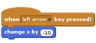
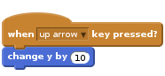
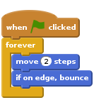
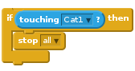
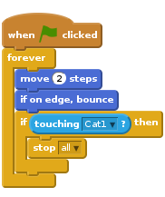
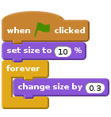
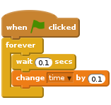

Heads Up!
This project is new. That means we’re still testing it, and there’s a small chance there could be some bugs or typos. If you’re a club leader trying out this project, please complete this short questionnaire (or email ) to let us know how it went!
Scratch Day: May 9th 2015
Saturday 9th May is Scratch Day - a day for people around the world to celebrate creating awesome games, art, stories and more with the help of Scratch!
To mark this occasion, we’ve created the project below for you to use either at home, at school or in your Code Clubs!
This project is aimed at those who have used Scratch before, but only a basic level of knowledge is needed! If you need a bit of practice before starting this project, we recommend trying our first Scratch project: Lost in Space.
Introduction
Help the Scratch mascot avoid the space junk and return safely back to Earth!

Step 1: Controlling the cat
Let’s allow the player to control the cat with the arrow keys.
Activity Checklist
Start a new Scratch project. You can find the online Scratch editor at jumpto.cc/scratch-new.
Click the ‘Shrink’ button and then click on the cat a few times to make it a little smaller.

To add a background, click ‘Choose backdrop from library’ and select the ‘Stars’ backdrop.

This is how your stage should look:

Let’s move the cat to the left when the left arrow key is pressed.
Click on your cat sprite, and add the following code:

Notice that you need to change the x coordinate to move the cat to the left.

Test out your cat by pressing the left arrow key. You should see your cat move towards the left of the stage.
To move the cat upwards when the up arrow key is pressed, you’ll need to add some more code:

Test your project again to make sure that your new code works!
Save your project
Challenge: More movement
Can you add more code to your cat sprite, so that it moves up, down, left and right?
Save your project
Step 2: Space junk!
Let’s add some space junk for the cat to avoid.
Activity Checklist
Click ‘Add new sprite from library’ and add the ‘Planet2’ sprite to your stage. You can change the size of the planet if you want to.

Add this code to make the planet move around the stage forever:

Click the green flag to test our your new planet. It should move left and right across the stage.
Have you noticed that your planet turns upside-down (rotates) when it hits the edge of the screen? To fix this, just add this code to your planet sprite:
The game should end when the planet touches the cat, so let’s add this code inside the planet’s
foreverloop:
Here’s how your planet’s code should look:

Test your game again - does the game end when the planet hits the cat?
Save your project
Challenge: Changing your planet’s orbit
Can you change the way your planet moves? You can use these blocks to help you, as well as any other blocks you like.

Save your project
Step 3: Getting back to Earth
Can you avoid the space junk for 30 seconds, and get back to Earth safely?
Activity Checklist
Firstly, let’s add the Earth sprite to the center of your stage.

Add this code to your Earth sprite, so that it starts off very small and slowly get’s bigger and bigger:

Test out your Earth sprite. It should look as if your cat is slowly floating towards Earth!

Click on your stage, and create a new variable to store the time.

You should now see your timer in the top-left of the stage.

Add this code to your stage, so that the timer counts up forever:

Click the green flag and you should see your timer start to count up!

The game is won if the cat can avoid the space junk for 30 seconds.
For this to work, you just need to set your timer to 0 at the start of the game, and then wait until the timer gets to 30.
Click on your cat sprite, and add this script:
![when flag clicked
set [time v] to [0]
wait until <(time) > [30]>
say [I made it!] for (2) secs
stop [all v]](69f2d4c169f736adfd5bdf7c07f09760456d9a63.png)
Save your project
Challenge: More space junk
Can you add more enemy sprites to your game, for the cat to avoid? You could add rocks, aliens, or anything else you like!

See if you can make each sprite moves differently.
Save your project
Challenge: 2 players
Can you improve your game, so that one of your enemy sprites is controlled by another player? They could use the w, a, s and d keys to control the enemy.
You could even let one of your players use the mouse to control their character. Here are some blocks that may help you: